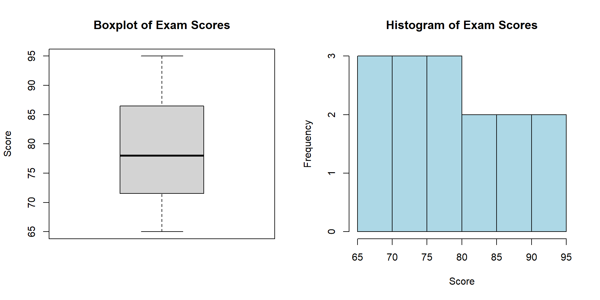

Module: Descriptive Statistics in R
Introduction to Descriptive Statistics
Descriptive statistics help us understand and summarize data by identifying patterns, central values, and the spread of our data. They form the foundation of data analysis and are essential for:
- Summarizing large datasets
- Understanding the distribution of variables
- Detecting outliers and anomalies
- Comparing different groups or samples
- Identifying relationships between variables
In this module, we’ll explore the following aspects of descriptive statistics in R:
- Measures of Central Tendency (mean, median, mode)
- Measures of Variability (range, variance, standard deviation, IQR)
- Skewness and Kurtosis
- Summary Functions
- Correlation Analysis
Let’s start by creating some sample data that we’ll use throughout this module:
# Set seed for reproducibility
set.seed(123)
# Create sample data
exam_scores <- c(65, 72, 83, 90, 78, 85, 65, 92, 76, 71, 88, 95, 70, 80, 75)
income <- c(42000, 48000, 52000, 61000, 55000, 72000, 69000, 44000,
58000, 120000, 53000, 60000, 68000, 51000, 49000)
age <- c(22, 25, 31, 29, 35, 42, 40, 23, 33, 38, 28, 35, 30, 26, 29)
# Create a data frame
student_data <- data.frame(
Age = age,
Score = exam_scores,
Income = income
)
# Display the first few rows
head(student_data)Measures of Central Tendency
Measures of central tendency describe the “middle” or “center” of a dataset. The three main measures are:
Mean (Average)
The mean is the sum of all values divided by the number of values:
# Calculate mean of exam scores
mean(exam_scores)## [1] 79# Calculate mean of income
mean(income)## [1] 60133.33# Calculate mean of age
mean(age)## [1] 31.06667# Calculate means for all numeric columns in the data frame
sapply(student_data, mean)## Age Score Income
## 31.06667 79.00000 60133.33333Median
The median is the middle value when data is arranged in order:
# Calculate median of exam scores
median(exam_scores)## [1] 78# Calculate median of income (notice how it's less affected by the outlier of 120000)
median(income)## [1] 55000# Calculate median of age
median(age)## [1] 30# Calculate medians for all numeric columns
sapply(student_data, median)## Age Score Income
## 30 78 55000Mode
R doesn’t have a built-in function for the mode (most frequently occurring value), but we can create our own:
# Function to find the mode
find_mode <- function(x) {
ux <- unique(x)
ux[which.max(tabulate(match(x, ux)))]
}
# Find mode of exam scores
find_mode(exam_scores)## [1] 65# Find mode of age
find_mode(age)## [1] 29# We can also examine frequency tables
table(exam_scores)## exam_scores
## 65 70 71 72 75 76 78 80 83 85 88 90 92 95
## 2 1 1 1 1 1 1 1 1 1 1 1 1 1Comparing Central Tendency Measures
Different measures of central tendency can tell us different things about our data:
# Create a data frame with all measures for comparison
central_measures <- data.frame(
Variable = c("Exam Scores", "Income", "Age"),
Mean = c(mean(exam_scores), mean(income), mean(age)),
Median = c(median(exam_scores), median(income), median(age)),
Mode = c(find_mode(exam_scores), find_mode(income), find_mode(age))
)
# Display the comparison
central_measuresExercise 1: Measures of Central Tendency
Using the following dataset about house prices and sizes:
# House data
sq_feet <- c(1800, 2200, 1600, 2100, 1950, 1850, 2350, 1750, 1900, 2500, 2150, 1700, 2300, 2050, 1850)
price <- c(210000, 265000, 185000, 245000, 230000, 220000, 280000, 200000,
225000, 295000, 255000, 190000, 275000, 240000, 215000)
bedrooms <- c(3, 4, 2, 4, 3, 3, 4, 3, 3, 5, 4, 3, 4, 3, 3)Complete the following tasks:
- Create a data frame called
house_datathat includes all three variables - Calculate the mean, median, and mode for each variable
- Create a function called
describe_centralthat takes a numeric vector and returns a named list containing the mean, median, and mode of the data - Apply your function to the price data
- Find which bedroom count is most common (the mode)
# Write your code here# 1. Create the data frame
house_data <- data.frame(
SqFeet = sq_feet,
Price = price,
Bedrooms = bedrooms
)
# 2. Calculate mean, median, mode for each variable
# Means
mean_sqft <- mean(sq_feet)
mean_price <- mean(price)
mean_bedrooms <- mean(bedrooms)
# Medians
median_sqft <- median(sq_feet)
median_price <- median(price)
median_bedrooms <- median(bedrooms)
# Function to find the mode
find_mode <- function(x) {
ux <- unique(x)
ux[which.max(tabulate(match(x, ux)))]
}
# Modes
mode_sqft <- find_mode(sq_feet)
mode_price <- find_mode(price)
mode_bedrooms <- find_mode(bedrooms)
# 3. Create the describe_central function
describe_central <- function(x) {
result <- list(
mean = mean(x),
median = median(x),
mode = find_mode(x)
)
return(result)
}
# 4. Apply function to price data
price_stats <- describe_central(price)
# 5. Find the most common bedroom count
most_common_bedrooms <- find_mode(bedrooms)
# Display results
cat("Mean, Median, Mode of Square Feet:", mean_sqft, median_sqft, mode_sqft, "\n")
cat("Mean, Median, Mode of Price:", mean_price, median_price, mode_price, "\n")
cat("Mean, Median, Mode of Bedrooms:", mean_bedrooms, median_bedrooms, mode_bedrooms, "\n")
cat("Price Statistics:", toString(price_stats), "\n")
cat("Most common number of bedrooms:", most_common_bedrooms)Measures of Variability
Measures of variability describe the spread or dispersion of data points. They tell us how much the data varies from the central values.
Range
The range is the difference between the maximum and minimum values:
# Calculate range for exam scores
range_scores <- range(exam_scores)
score_range <- max(exam_scores) - min(exam_scores)
# Calculate range for income
range_income <- range(income)
income_range <- max(income) - min(income)
# Display
cat("Exam Scores Range:", range_scores, "- Difference:", score_range, "\n")## Exam Scores Range: 65 95 - Difference: 30cat("Income Range:", range_income, "- Difference:", income_range)## Income Range: 42000 120000 - Difference: 78000Variance
Variance measures the average squared deviation from the mean:
# Calculate variance for exam scores
var_scores <- var(exam_scores)
# Calculate variance for income
var_income <- var(income)
# Calculate variance for age
var_age <- var(age)
# Display
cat("Variance of Exam Scores:", var_scores, "\n")## Variance of Exam Scores: 92.28571cat("Variance of Income:", var_income, "\n")## Variance of Income: 354123810cat("Variance of Age:", var_age)## Variance of Age: 36.49524Standard Deviation
Standard deviation is the square root of variance and is in the same units as the original data:
# Calculate standard deviation for exam scores
sd_scores <- sd(exam_scores)
# Calculate standard deviation for income
sd_income <- sd(income)
# Calculate standard deviation for age
sd_age <- sd(age)
# Display
cat("Standard Deviation of Exam Scores:", sd_scores, "\n")## Standard Deviation of Exam Scores: 9.606545cat("Standard Deviation of Income:", sd_income, "\n")## Standard Deviation of Income: 18818.18cat("Standard Deviation of Age:", sd_age, "\n")## Standard Deviation of Age: 6.041129# Calculate for all variables in the data frame
sapply(student_data, sd)## Age Score Income
## 6.041129 9.606545 18818.177636Interquartile Range (IQR)
The interquartile range is the difference between the 75th and 25th percentiles:
# Calculate IQR for exam scores
iqr_scores <- IQR(exam_scores)
# Calculate IQR for income
iqr_income <- IQR(income)
# Calculate quartiles for income
quartiles_income <- quantile(income)
# Display
cat("IQR of Exam Scores:", iqr_scores, "\n")## IQR of Exam Scores: 15cat("IQR of Income:", iqr_income, "\n")## IQR of Income: 14500cat("Quartiles of Income:", "\n")## Quartiles of Income:quartiles_income## 0% 25% 50% 75% 100%
## 42000 50000 55000 64500 120000Visualizing Variability
Boxplots and histograms help visualize the spread of data:
# Set up a 1x2 plotting area
par(mfrow = c(1, 2))
# Create boxplot of exam scores
boxplot(exam_scores, main = "Boxplot of Exam Scores", ylab = "Score")
# Create histogram of exam scores
hist(exam_scores, main = "Histogram of Exam Scores", xlab = "Score",
col = "lightblue", breaks = 8)
# Reset plotting area
par(mfrow = c(1, 1))Exercise 2: Measures of Variability
Using the house data from Exercise 1, complete the following tasks:
- Calculate the range (min, max, and difference) for each numeric variable
- Calculate the variance and standard deviation of each variable
- Calculate the interquartile range (IQR) for each variable
- Create a function called
describe_variabilitythat takes a numeric vector and returns a named list containing:- min, max, range
- variance, standard deviation
- IQR
- quartiles (as a vector)
- Apply this function to the house prices
- Create a boxplot of the house prices to visualize the variability
# Write your code here# Get the house data
sq_feet <- c(1800, 2200, 1600, 2100, 1950, 1850, 2350, 1750, 1900, 2500, 2150, 1700, 2300, 2050, 1850)
price <- c(210000, 265000, 185000, 245000, 230000, 220000, 280000, 200000,
225000, 295000, 255000, 190000, 275000, 240000, 215000)
bedrooms <- c(3, 4, 2, 4, 3, 3, 4, 3, 3, 5, 4, 3, 4, 3, 3)
# 1. Calculate range for each variable
# Square feet
min_sqft <- min(sq_feet)
max_sqft <- max(sq_feet)
range_sqft <- max_sqft - min_sqft
# Price
min_price <- min(price)
max_price <- max(price)
range_price <- max_price - min_price
# Bedrooms
min_beds <- min(bedrooms)
max_beds <- max(bedrooms)
range_beds <- max_beds - min_beds
# 2. Calculate variance and standard deviation
# Square feet
var_sqft <- var(sq_feet)
sd_sqft <- sd(sq_feet)
# Price
var_price <- var(price)
sd_price <- sd(price)
# Bedrooms
var_beds <- var(bedrooms)
sd_beds <- sd(bedrooms)
# 3. Calculate IQR
iqr_sqft <- IQR(sq_feet)
iqr_price <- IQR(price)
iqr_beds <- IQR(bedrooms)
# 4. Create the describe_variability function
describe_variability <- function(x) {
result <- list(
min = min(x),
max = max(x),
range = max(x) - min(x),
variance = var(x),
sd = sd(x),
IQR = IQR(x),
quartiles = quantile(x)
)
return(result)
}
# 5. Apply function to price data
price_variability <- describe_variability(price)
# 6. Create boxplot of house prices
boxplot(price, main = "Distribution of House Prices", ylab = "Price ($)")
# Display results
cat("Range (min, max, difference) of Square Feet:", min_sqft, max_sqft, range_sqft, "\n")
cat("Range (min, max, difference) of Price:", min_price, max_price, range_price, "\n")
cat("Range (min, max, difference) of Bedrooms:", min_beds, max_beds, range_beds, "\n\n")
cat("Variance and SD of Square Feet:", var_sqft, sd_sqft, "\n")
cat("Variance and SD of Price:", var_price, sd_price, "\n")
cat("Variance and SD of Bedrooms:", var_beds, sd_beds, "\n\n")
cat("IQR of Square Feet:", iqr_sqft, "\n")
cat("IQR of Price:", iqr_price, "\n")
cat("IQR of Bedrooms:", iqr_beds, "\n\n")
print(price_variability)Skewness and Kurtosis
Skewness and kurtosis describe the shape of a data distribution.
Skewness
Skewness measures the asymmetry of a distribution: - Positive skew: right tail is longer (mean > median) - Negative skew: left tail is longer (mean < median) - Zero skew: symmetric distribution (mean ≈ median)
# Load the moments package for skewness calculations
library(moments)
# Calculate skewness of exam scores
skew_scores <- skewness(exam_scores)
# Calculate skewness of income (expected to be positive due to the high outlier)
skew_income <- skewness(income)
# Display
cat("Skewness of Exam Scores:", skew_scores, "\n")## Skewness of Exam Scores: 0.122594cat("Skewness of Income:", skew_income, "\n")## Skewness of Income: 2.244295# Create datasets with known skewness for comparison
negative_skew <- c(50, 55, 60, 65, 70, 75, 80, 85, 90, 90, 90, 90, 95, 95, 95)
symmetric_data <- c(50, 55, 60, 65, 70, 75, 80, 80, 80, 80, 85, 90, 95, 100, 105)
positive_skew <- c(5, 5, 5, 10, 10, 15, 20, 25, 30, 35, 40, 45, 50, 55, 95)
# Calculate and display skewness
cat("Skewness of Negative Skew Data:", skewness(negative_skew), "\n")## Skewness of Negative Skew Data: -0.612076cat("Skewness of Symmetric Data:", skewness(symmetric_data), "\n")## Skewness of Symmetric Data: -0.0961491cat("Skewness of Positive Skew Data:", skewness(positive_skew))## Skewness of Positive Skew Data: 1.180105Kurtosis
Kurtosis measures the “tailedness” of a distribution: - High kurtosis: heavy tails, more outliers (leptokurtic) - Low kurtosis: light tails, fewer outliers (platykurtic) - Normal distribution has kurtosis of 3 (mesokurtic)
The kurtosis() function in R returns the raw kurtosis
value. Excess kurtosis (kurtosis - 3) is sometimes used to compare
against the normal distribution:
# Calculate kurtosis of exam scores
kurt_scores <- kurtosis(exam_scores)
excess_kurt_scores <- kurt_scores - 3
# Calculate kurtosis of income
kurt_income <- kurtosis(income)
excess_kurt_income <- kurt_income - 3
# Display
cat("Kurtosis of Exam Scores:", kurt_scores, "- Excess Kurtosis:", excess_kurt_scores, "\n")## Kurtosis of Exam Scores: 1.86082 - Excess Kurtosis: -1.13918cat("Kurtosis of Income:", kurt_income, "- Excess Kurtosis:", excess_kurt_income, "\n")## Kurtosis of Income: 7.996158 - Excess Kurtosis: 4.996158# Create datasets with different kurtosis levels
high_kurtosis <- c(45, 45, 45, 45, 50, 50, 50, 50, 50, 50, 50, 50, 55, 55, 55, 55, 100)
low_kurtosis <- c(40, 42, 44, 46, 48, 50, 52, 54, 56, 58, 60)
# Calculate and display kurtosis
cat("Kurtosis of High Kurtosis Data:", kurtosis(high_kurtosis), "\n")## Kurtosis of High Kurtosis Data: 12.83504cat("Kurtosis of Low Kurtosis Data:", kurtosis(low_kurtosis))## Kurtosis of Low Kurtosis Data: 1.78Visualizing Skewness and Kurtosis
Histograms help visualize these characteristics:
# Set up a 2x2 plotting area
par(mfrow = c(2, 2))
# Plot histograms
hist(negative_skew, main = "Negative Skew", xlab = "Value", col = "lightblue")
hist(positive_skew, main = "Positive Skew", xlab = "Value", col = "lightgreen")
hist(high_kurtosis, main = "High Kurtosis", xlab = "Value", col = "lightpink")
hist(low_kurtosis, main = "Low Kurtosis", xlab = "Value", col = "lightyellow")
# Reset plotting area
par(mfrow = c(1, 1))Exercise 3: Skewness and Kurtosis
For this exercise, we’ll work with a dataset that has different distributions. Complete the following tasks:
Create the following datasets:
dataset_a:c(20, 21, 22, 23, 25, 30, 32, 40, 41, 41, 45, 49, 50, 60, 99)dataset_b:c(10, 10, 15, 30, 35, 37, 40, 40, 41, 45, 50, 52, 55, 60, 70, 90, 95)dataset_c:c(60, 70, 71, 72, 73, 74, 74, 75, 75, 76, 77, 78, 80, 81, 84, 84, 85, 87, 90)
For each dataset, calculate and store:
- Mean and median
- Skewness
- Kurtosis and excess kurtosis
Create a function called
describe_shapethat takes a numeric vector and returns a data frame with:- N (sample size)
- Mean
- Median
- Skewness
- Kurtosis
- A text description of skewness (“Approximately Symmetric”, “Positively Skewed”, or “Negatively Skewed”)
Apply this function to all three datasets
Create histograms of all three datasets to visualize the differences in their distributions
# Write your code here# Load the moments package
library(moments)
# 1. Create the datasets
dataset_a <- c(20, 21, 22, 23, 25, 30, 32, 40, 41, 41, 45, 49, 50, 60, 99)
dataset_b <- c(10, 10, 15, 30, 35, 37, 40, 40, 41, 45, 50, 52, 55, 60, 70, 90, 95)
dataset_c <- c(60, 70, 71, 72, 73, 74, 74, 75, 75, 76, 77, 78, 80, 81, 84, 84, 85, 87, 90)
# 2. Calculate statistics for each dataset
# Dataset A
mean_a <- mean(dataset_a)
median_a <- median(dataset_a)
skew_a <- skewness(dataset_a)
kurt_a <- kurtosis(dataset_a)
excess_kurt_a <- kurt_a - 3
# Dataset B
mean_b <- mean(dataset_b)
median_b <- median(dataset_b)
skew_b <- skewness(dataset_b)
kurt_b <- kurtosis(dataset_b)
excess_kurt_b <- kurt_b - 3
# Dataset C
mean_c <- mean(dataset_c)
median_c <- median(dataset_c)
skew_c <- skewness(dataset_c)
kurt_c <- kurtosis(dataset_c)
excess_kurt_c <- kurt_c - 3
# 3. Create the describe_shape function
describe_shape <- function(x) {
n <- length(x)
mean_val <- mean(x)
median_val <- median(x)
skew_val <- skewness(x)
kurt_val <- kurtosis(x)
# Determine skewness description
if (abs(skew_val) < 0.5) {
skew_desc <- "Approximately Symmetric"
} else if (skew_val >= 0.5) {
skew_desc <- "Positively Skewed"
} else {
skew_desc <- "Negatively Skewed"
}
# Create a data frame with the results
result <- data.frame(
N = n,
Mean = mean_val,
Median = median_val,
Skewness = skew_val,
Kurtosis = kurt_val,
ExcessKurtosis = kurt_val - 3,
SkewnessDescription = skew_desc
)
return(result)
}
# 4. Apply the function to all three datasets
result_a <- describe_shape(dataset_a)
result_b <- describe_shape(dataset_b)
result_c <- describe_shape(dataset_c)
# Combine results
all_results <- rbind(
cbind(Dataset = "A", result_a),
cbind(Dataset = "B", result_b),
cbind(Dataset = "C", result_c)
)
# 5. Create histograms
par(mfrow = c(1, 3))
hist(dataset_a, main = "Dataset A", xlab = "Value", col = "lightblue")
hist(dataset_b, main = "Dataset B", xlab = "Value", col = "lightgreen")
hist(dataset_c, main = "Dataset C", xlab = "Value", col = "lightpink")
par(mfrow = c(1, 1))
# Display the results
print(all_results)Summary Functions in R
R provides several functions to get comprehensive summaries of data quickly.
The summary() Function
The most basic summary function in R:
# Summary of individual variables
summary(exam_scores)## Min. 1st Qu. Median Mean 3rd Qu. Max.
## 65.0 71.5 78.0 79.0 86.5 95.0summary(income)## Min. 1st Qu. Median Mean 3rd Qu. Max.
## 42000 50000 55000 60133 64500 120000# Summary of entire data frame
summary(student_data)## Age Score Income
## Min. :22.00 Min. :65.0 Min. : 42000
## 1st Qu.:27.00 1st Qu.:71.5 1st Qu.: 50000
## Median :30.00 Median :78.0 Median : 55000
## Mean :31.07 Mean :79.0 Mean : 60133
## 3rd Qu.:35.00 3rd Qu.:86.5 3rd Qu.: 64500
## Max. :42.00 Max. :95.0 Max. :120000The describe() Function from psych
Package
The psych package’s describe() function
provides more detailed statistics:
# Load psych package
library(psych)
# Describe individual variables
describe(exam_scores)# Describe entire data frame
describe(student_data)Custom Summary Functions
We can create our own summary functions for specific needs:
# Create a comprehensive summary function
comprehensive_summary <- function(x) {
if (!is.numeric(x)) stop("Input must be numeric")
result <- c(
N = length(x),
Missing = sum(is.na(x)),
Mean = mean(x, na.rm = TRUE),
SD = sd(x, na.rm = TRUE),
Median = median(x, na.rm = TRUE),
Min = min(x, na.rm = TRUE),
Max = max(x, na.rm = TRUE),
Range = max(x, na.rm = TRUE) - min(x, na.rm = TRUE),
Q1 = quantile(x, 0.25, na.rm = TRUE),
Q3 = quantile(x, 0.75, na.rm = TRUE),
IQR = IQR(x, na.rm = TRUE),
Skewness = skewness(x, na.rm = TRUE),
Kurtosis = kurtosis(x, na.rm = TRUE)
)
return(result)
}
# Apply to income data
comprehensive_summary(income)## N Missing Mean SD Median Min
## 1.500000e+01 0.000000e+00 6.013333e+04 1.881818e+04 5.500000e+04 4.200000e+04
## Max Range Q1.25% Q3.75% IQR Skewness
## 1.200000e+05 7.800000e+04 5.000000e+04 6.450000e+04 1.450000e+04 2.244295e+00
## Kurtosis
## 7.996158e+00Summarizing Grouped Data
We can summarize data by groups using various approaches:
# Create grouped data
set.seed(123)
survey_data <- data.frame(
Gender = rep(c("Male", "Female"), each = 10),
Age = c(runif(10, 20, 40), runif(10, 25, 45)),
Income = c(rnorm(10, 50000, 10000), rnorm(10, 55000, 12000)),
Satisfaction = c(sample(1:5, 10, replace = TRUE), sample(2:5, 10, replace = TRUE))
)
# Summarize by gender using aggregate
aggregate(Age ~ Gender, data = survey_data, FUN = mean)aggregate(cbind(Age, Income) ~ Gender, data = survey_data, FUN = mean)# Multiple summary statistics
aggregate(Income ~ Gender, data = survey_data,
FUN = function(x) c(Mean = mean(x), Median = median(x), SD = sd(x)))# Using tapply
tapply(survey_data$Income, survey_data$Gender, mean)## Female Male
## 49905.29 52086.22tapply(survey_data$Income, survey_data$Gender, summary)## $Female
## Min. 1st Qu. Median Mean 3rd Qu. Max.
## 34760 42312 46876 49905 55726 70046
##
## $Male
## Min. 1st Qu. Median Mean 3rd Qu. Max.
## 30334 46731 53803 52086 56505 67869# Using by function
by(survey_data[,c("Age", "Income")], survey_data$Gender, summary)## survey_data$Gender: Female
## Age Income
## Min. :25.84 Min. :34760
## 1st Qu.:30.33 1st Qu.:42312
## Median :35.26 Median :46876
## Mean :35.47 Mean :49905
## 3rd Qu.:41.89 3rd Qu.:55726
## Max. :44.14 Max. :70046
## ------------------------------------------------------------
## survey_data$Gender: Male
## Age Income
## Min. :20.91 Min. :30334
## 1st Qu.:28.42 1st Qu.:46731
## Median :30.80 Median :53803
## Mean :31.56 Mean :52086
## 3rd Qu.:37.19 3rd Qu.:56505
## Max. :38.81 Max. :67869Exercise 4: Summary Functions
Using the mtcars dataset built into R, complete the
following tasks:
- Get a basic summary of the entire dataset using
summary() - Use the
psychpackage’sdescribe()function to get more detailed statistics - Create a custom function called
car_summarythat:- Takes a data frame as input
- Returns the mean, median, standard deviation, min, and max for each numeric variable
- Formats the output as a clean data frame with variables as rows
- Apply your function to the
mtcarsdataset - Summarize the average mpg, hp, and wt by number of cylinders using
aggregate() - Create a boxplot of mpg grouped by number of cylinders to visualize the differences
# Write your code here# Load the required packages
library(psych)
# 1. Basic summary of mtcars
mtcars_summary <- summary(mtcars)
print(mtcars_summary)
# 2. More detailed statistics using describe()
mtcars_describe <- describe(mtcars)
print(mtcars_describe)
# 3. Create custom summary function
car_summary <- function(data) {
# Initialize an empty data frame for results
result <- data.frame(
Variable = character(),
Mean = numeric(),
Median = numeric(),
StdDev = numeric(),
Min = numeric(),
Max = numeric(),
stringsAsFactors = FALSE
)
# Process each numeric variable
for (var in names(data)) {
if (is.numeric(data[[var]])) {
row <- data.frame(
Variable = var,
Mean = mean(data[[var]]),
Median = median(data[[var]]),
StdDev = sd(data[[var]]),
Min = min(data[[var]]),
Max = max(data[[var]]),
stringsAsFactors = FALSE
)
result <- rbind(result, row)
}
}
return(result)
}
# 4. Apply the function to mtcars
custom_summary <- car_summary(mtcars)
print(custom_summary)
# 5. Summarize by number of cylinders
cyl_summary <- aggregate(cbind(mpg, hp, wt) ~ cyl, data = mtcars, FUN = mean)
print(cyl_summary)
# 6. Create boxplot of mpg by cylinders
boxplot(mpg ~ cyl, data = mtcars,
main = "MPG by Number of Cylinders",
xlab = "Number of Cylinders",
ylab = "Miles Per Gallon",
col = c("lightblue", "lightgreen", "lightpink"))Correlation Analysis
Correlation measures the strength and direction of the linear relationship between two variables.
Correlation Coefficient
The most common correlation measure is Pearson’s r, which ranges from -1 (perfect negative correlation) to 1 (perfect positive correlation):
# Calculate correlation between exam scores and income
cor_score_income <- cor(exam_scores, income)
# Calculate correlation between exam scores and age
cor_score_age <- cor(exam_scores, age)
# Calculate correlation between income and age
cor_income_age <- cor(income, age)
# Display
cat("Correlation between Exam Scores and Income:", cor_score_income, "\n")## Correlation between Exam Scores and Income: -0.2038811cat("Correlation between Exam Scores and Age:", cor_score_age, "\n")## Correlation between Exam Scores and Age: -0.04307791cat("Correlation between Income and Age:", cor_income_age, "\n")## Correlation between Income and Age: 0.6590169# Correlation matrix for all variables in the data frame
cor_matrix <- cor(student_data)
print(cor_matrix)## Age Score Income
## Age 1.00000000 -0.04307791 0.6590169
## Score -0.04307791 1.00000000 -0.2038811
## Income 0.65901695 -0.20388105 1.0000000Types of Correlation
R supports different correlation methods:
# Create data with a non-linear relationship
x <- 1:20
y <- x^2 + rnorm(20, 0, 10)
# Compare correlation types
cat("Pearson correlation:", cor(x, y, method = "pearson"), "\n")## Pearson correlation: 0.9698081cat("Spearman correlation:", cor(x, y, method = "spearman"), "\n")## Spearman correlation: 0.9849624cat("Kendall correlation:", cor(x, y, method = "kendall"), "\n")## Kendall correlation: 0.9368421Testing Correlation Significance
The cor.test() function tests whether a correlation is
significantly different from zero:
# Test correlation between exam scores and income
cor_test_result <- cor.test(exam_scores, income)
print(cor_test_result)##
## Pearson's product-moment correlation
##
## data: exam_scores and income
## t = -0.75088, df = 13, p-value = 0.4661
## alternative hypothesis: true correlation is not equal to 0
## 95 percent confidence interval:
## -0.6484222 0.3443455
## sample estimates:
## cor
## -0.2038811# Test correlation between income and age
cor_test_age_income <- cor.test(income, age)
print(cor_test_age_income)##
## Pearson's product-moment correlation
##
## data: income and age
## t = 3.1592, df = 13, p-value = 0.007537
## alternative hypothesis: true correlation is not equal to 0
## 95 percent confidence interval:
## 0.2215457 0.8756644
## sample estimates:
## cor
## 0.6590169Visualizing Correlations
Scatter Plots
# Set up a 1x2 plotting area
par(mfrow = c(1, 2))
# Create scatter plot of exam scores vs. income
plot(exam_scores, income,
main = "Exam Scores vs. Income",
xlab = "Exam Score",
ylab = "Income",
pch = 19,
col = "blue")
abline(lm(income ~ exam_scores), col = "red")
# Create scatter plot of age vs. income
plot(age, income,
main = "Age vs. Income",
xlab = "Age",
ylab = "Income",
pch = 19,
col = "green")
abline(lm(income ~ age), col = "red")# Reset plotting area
par(mfrow = c(1, 1))Correlation Matrix Visualization
# Load corrplot package
library(corrplot)
# Create a correlation matrix
corr_matrix <- cor(student_data)
# Visualize the correlation matrix
corrplot(corr_matrix, method = "circle", type = "upper",
tl.col = "black", tl.srt = 45,
addCoef.col = "black", number.cex = 0.7)
Exercise 5: Correlation Analysis
Using the built-in mtcars dataset, complete the
following tasks:
Calculate the correlation between:
- mpg (miles per gallon) and wt (weight)
- mpg and hp (horsepower)
- hp and qsec (quarter mile time)
Test whether these correlations are statistically significant using
cor.test()Create a function called
interpret_correlationthat:- Takes a correlation coefficient as input
- Returns a interpretation based on the following rules:
- |r| < 0.3: “Weak correlation”
- 0.3 ≤ |r| < 0.5: “Moderate correlation”
- 0.5 ≤ |r| < 0.7: “Strong correlation”
- |r| ≥ 0.7: “Very strong correlation”
- Should also indicate if it’s positive or negative
Apply your function to the three correlations you calculated
Create a scatter plot matrix of mpg, wt, hp, and qsec using
pairs()Create a correlation matrix visualization of all numeric variables in mtcars using corrplot
# Write your code here# Load required packages
library(corrplot)
# 1. Calculate correlations
cor_mpg_wt <- cor(mtcars$mpg, mtcars$wt)
cor_mpg_hp <- cor(mtcars$mpg, mtcars$hp)
cor_hp_qsec <- cor(mtcars$hp, mtcars$qsec)
# Display correlations
cat("Correlation between mpg and wt:", cor_mpg_wt, "\n")
cat("Correlation between mpg and hp:", cor_mpg_hp, "\n")
cat("Correlation between hp and qsec:", cor_hp_qsec, "\n\n")
# 2. Test statistical significance
cor_test_mpg_wt <- cor.test(mtcars$mpg, mtcars$wt)
cor_test_mpg_hp <- cor.test(mtcars$mpg, mtcars$hp)
cor_test_hp_qsec <- cor.test(mtcars$hp, mtcars$qsec)
# Display test results
cat("Test for mpg vs wt: p-value =", cor_test_mpg_wt$p.value, "\n")
cat("Test for mpg vs hp: p-value =", cor_test_mpg_hp$p.value, "\n")
cat("Test for hp vs qsec: p-value =", cor_test_hp_qsec$p.value, "\n\n")
# 3. Create the interpret_correlation function
interpret_correlation <- function(r) {
# Calculate absolute value of r
abs_r <- abs(r)
# Determine strength
if (abs_r < 0.3) {
strength <- "weak"
} else if (abs_r < 0.5) {
strength <- "moderate"
} else if (abs_r < 0.7) {
strength <- "strong"
} else {
strength <- "very strong"
}
# Determine direction
direction <- ifelse(r > 0, "positive", "negative")
# Return interpretation
return(paste("This is a", strength, direction, "correlation (r =", round(r, 3), ")"))
}
# 4. Apply the function to the three correlations
interpretation_mpg_wt <- interpret_correlation(cor_mpg_wt)
interpretation_mpg_hp <- interpret_correlation(cor_mpg_hp)
interpretation_hp_qsec <- interpret_correlation(cor_hp_qsec)
# Display interpretations
cat("mpg and wt:", interpretation_mpg_wt, "\n")
cat("mpg and hp:", interpretation_mpg_hp, "\n")
cat("hp and qsec:", interpretation_hp_qsec, "\n\n")
# 5. Create a scatter plot matrix
pairs(mtcars[, c("mpg", "wt", "hp", "qsec")],
main = "Scatter Plot Matrix",
pch = 19,
col = "blue")
# 6. Create a correlation matrix visualization
car_cor <- cor(mtcars)
corrplot(car_cor, method = "circle", type = "upper",
tl.col = "black", tl.srt = 45,
addCoef.col = "black", number.cex = 0.7)Summary
In this module, you’ve learned about descriptive statistics in R, covering:
- Measures of Central Tendency:
- Mean, median, and mode for describing the center of a distribution
- How to compare and interpret different measures of central tendency
- Measures of Variability:
- Range, variance, standard deviation, and IQR for measuring data spread
- How to visualize and interpret data variability
- Skewness and Kurtosis:
- How to measure and interpret the shape of distributions
- Recognizing different types of data distributions
- Summary Functions:
- Using built-in functions like
summary()anddescribe() - Creating custom summary functions for specific needs
- Summarizing data by groups
- Using built-in functions like
- Correlation Analysis:
- Calculating and interpreting correlation coefficients
- Testing correlation significance
- Visualizing relationships between variables
These skills provide a solid foundation for understanding your data before proceeding to more advanced statistical analysis or modeling. Descriptive statistics are an essential first step in any data analysis project, helping you identify patterns, anomalies, and relationships in your data.
Additional Resources
- R for Data Science - A comprehensive guide to data science with R
- Descriptive Statistics in R (DataCamp)
- psych Package Documentation
- The corrplot Package Documentation
- Statistics with R (Duke University on Coursera)